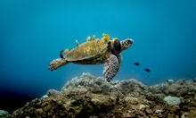

Emotion
Uses feeling, imagination, empathy, fear, hope, or urgency to make the audience care.
Year 7 English
Pathos, Logos, Ethos are three ways writers and speakers persuade an audience.
Today you will choose one appeal and use it to argue why we should protect marine turtles.

Where it began
More than 2,000 years ago, the Greek philosopher Aristotle studied how public speakers changed people's minds.
He described three persuasive appeals: pathos, logos, and ethos.
They still appear in speeches, ads, social media, campaigns, documentaries, and persuasive writing.
The three appeals
Uses feeling, imagination, empathy, fear, hope, or urgency to make the audience care.
Uses facts, statistics, evidence, cause and effect, or clear reasoning to make an argument make sense.
Builds credibility by showing expertise, fairness, responsibility, or shared values.
Marine turtle examples
Imagine a hatchling crossing the sand, only to meet plastic, bright lights, and danger before it reaches the sea.
Marine turtles help keep seagrass and reef ecosystems healthy, so protecting turtles helps protect ocean habitats.
Scientists, Traditional Owners, and conservation groups show that long-term care is needed to protect turtle populations.
Choose your move
Your task: choose pathos, logos, or ethos.
Write 2-3 sentences for your current project explaining why we should protect marine turtles.
Make your chosen appeal obvious through your word choice, evidence, or voice.
Sentence starters
Imagine a young turtle...
Protecting marine turtles matters because...
Conservation experts and local communities show us that...
Challenge: blend two appeals, but keep your main one clear.